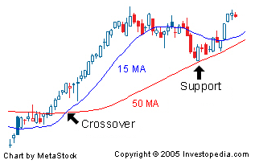
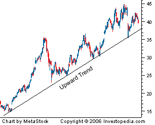
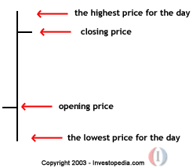
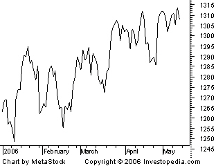

What is Technical Analysis?
A method of evaluating securities by analyzing statistics generated by market activity, such as past prices and volume. Technical analysts do not attempt to measure a security's intrinsic value, but instead use charts and other tools to identify patterns that can suggest future activity.
Technical analysts believe that the historical performance of stocks and markets are indications of future performance.
What is Moving Average?
An indicator frequently used in technical analysis showing the average value of a security's price over a set period. Moving averages are generally used to measure momentum and define areas of possible support and resistance.
Moving averages are used to emphasize the direction of a trend and to smooth out price and volume fluctuations, or "noise", that can confuse interpretation. Typically, upward momentum is confirmed when a short-term average (e.g.15-day) crosses above a longer-term average (e.g. 50-day). Downward momentum is confirmed when a short-term average crosses below a long-term average.

What is Trend?
The general direction of a market or of the price of an asset. Trends can vary in length from short, to intermediate, to long term. If you can identify a trend, it can be highly profitable, because you will be able to trade with the trend.
As a general strategy, it is best to trade with trends, meaning that if the general trend of the market is headed up, you should be very cautious about taking any positions that rely on the trend going in the opposite direction.
A trend can also apply to interest rates, yields, equities and any other market which is characterized by a long-term movement in price or volume.

What is Bar Chart?
A style of chart used by some technical analysts, on which, as illustrated below, the top of the vertical line indicates the highest price a security traded at during the day, and the bottom represents the lowest price. The closing price is displayed on the right side of the bar, and the opening price is shown on the left side of the bar. A single bar like the one below represents one day of trading.
The visual representation of price activity over a given period of time is used to spot trends and patterns.

What is Line Chart?
A style of chart that is created by connecting a series of data points together with a line. This is the most basic type of chart used in finance and it is generally created by connecting a series of past prices together with a line.
A line chart can give the reader a fairly good idea of where the price of an asset has traveled over a given time frame.

For more information please visit the link:click